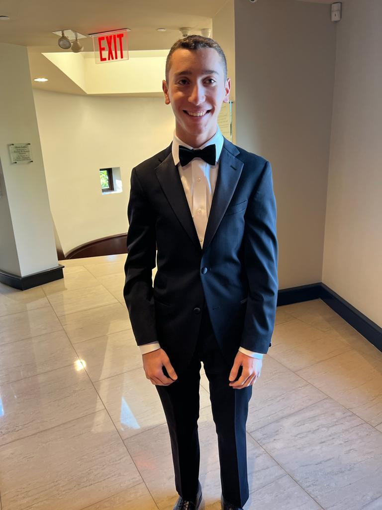

I'm Raymond Greenberg, a senior at Boston University pursuing a dual degree in Business Administration and Computer Science. I'm passionate about the intersection of business and technology, and I'm actively seeking opportunities to apply my skills in data analytics and software development to solve complex business challenges.
Welome to my website! Here you will find information about my work experiences, education, projects, and more.